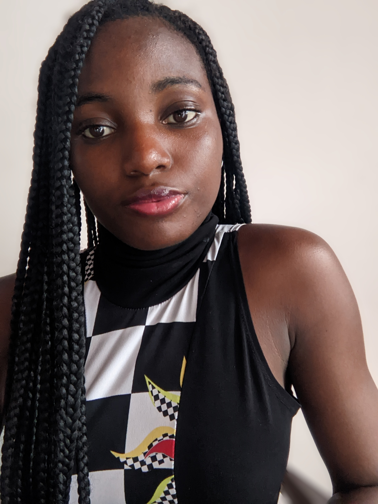

KENZAH

À propos de moi
Je suis un développeur web passionné, spécialisé dans le développement front-end et back-end. J'aime créer des sites web interactifs et performants.
fonctionnel. Mes langage de développement sont:
jAVA, JAVAFX, HTML et python